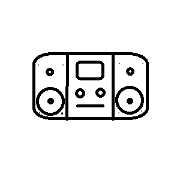
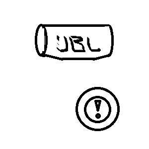
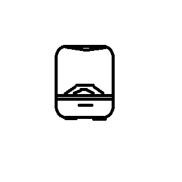

今回はスピーカーについて
１・はじめに
僕は結構スピーカーが好きなんですよね。
あんまりたくさんというほどは持っていないけれど好きです。
あとは音楽を聴くことが好きです。
洋楽とか、j-popとか、時にはクラシックを聴くこともあります。
その時その時の気分に合わせて聞くものを変えたりもします。
今回はまじめに自分の趣味「スピーカーと音楽」について語っていきます。
２・本編
ここまでは自分の趣味についてでした。
まずスピーカーのことについてです。
３・スピーカー
僕が使っているスピーカーの種類は、
コンポ
ポータブルスピーカー
少し大きめの家庭内用スピーカー
ざっとこんな感じです
～何が違うのか～
主な違いは用途です。
コンポは家庭内でゆっくり音楽を楽しむためのものです
ちなみに僕はソニーの１５年前くらいの古いものを愛用しています。母からのおさがりです。
音質は最高です。

こーゆーやつ(こんなに丸くはない)
ポータブルスピーカーは屋外でパーティをするときに重宝します。
家の中で使うと、低音が強くてうるさいので注意です。
ちなみに僕はjblのものを愛用しています。
パワフルなので便利です

こーゆーやつ
少し大きめの家庭内用スピーカーは結構低音強めです。
↑（なんやこの「少し大きめの家庭内用スピーカー」ってのは...)
臨場感があって心地よいです。
でも低音がとてもうるさくて大変なのでおすすめです。
コンポみたいに置くだけで使えます。
僕はharman/kardonを愛用しています。

こーゆーやつ
４・音楽
今日はしっかり葉加瀬太郎を🄭で聞きました。
普段はAlan Walkerを好きで聞いています。
MarshmelloやColdplayなども好きです。
日本のアーティストではGreeeenが好きです。
スピッツのロビンソンも好きです。
ボカロも時々聞きます
５・まとめ
ということで今回は僕の趣味をしゃべりまくる回でした。
今度は使っているスピーカーをもっとしっかり紹介していけたらなと思います。
そして相変わらずブログは不定期更新で出させていただきます。
時々わがホームページを訪ねてきてくれるととてもうれしいです。
そいではさようなら～
豆